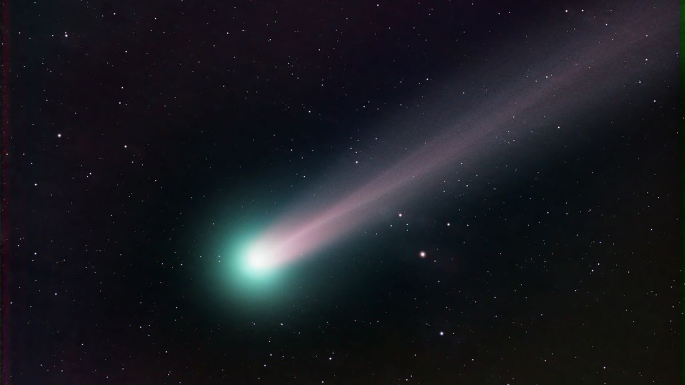

TEMNA SNOV

VESOLJSKI PRAH
JATA GALAKSIJ

GALAKSIJA

ČRNA LUKNJA
PROSTA ZVEZDA
PROST PLANET

ZVEZDA

Astronomski objekt, nebesni objekt, zvezdni objekt ali nebesno telo je naravna fizična entiteta, asociacija ali struktura, ki obstaja v opazovanem vesolju. V astronomiji se izraza predmet in telo pogosto uporabljata zamenljivo. Vendar pa je astronomsko telo ali nebesno telo ena sama, tesno povezana, sosednja entiteta, medtem ko je astronomski ali nebesni objekt kompleksna, manj kohezivno povezana struktura, ki je lahko sestavljena iz več teles ali celo drugih predmetov s podstrukturami.
Primeri astronomskih objektov vključujejo planetarne sisteme, zvezdne kopice, meglice in galaksije, medtem ko so asteroidi, lune, planeti in zvezde astronomska telesa. Komet je mogoče identificirati tako kot telo kot kot predmet: je telo, ko govorimo o zamrznjenem jedru ledu in prahu, in objekt, ko opisujemo celoten komet z njegovo difuzno komo in repom.
TEMNA SNOV |
VESOLJSKI PRAH |
JATA GALAKSIJ |
GALAKSIJA |
ČRNA LUKNJA |
PROSTA ZVEZDA |
PROST PLANET |
ZVEZDA |
OZVEZDJE |
ALFA KENTAVER |

KOMET |
SONČEV SESTAV |